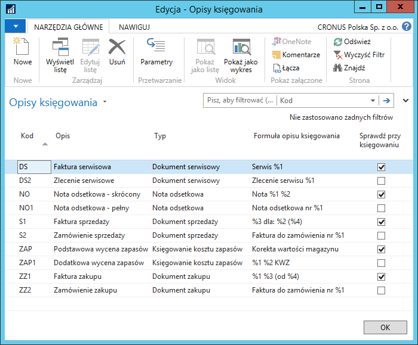
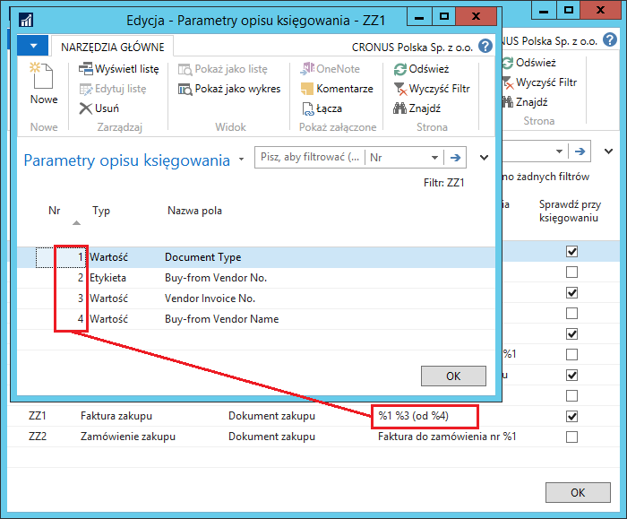
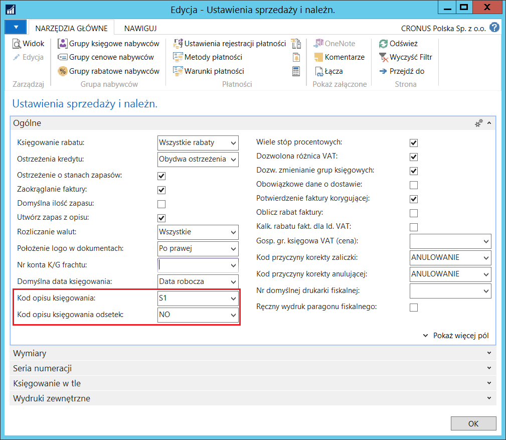
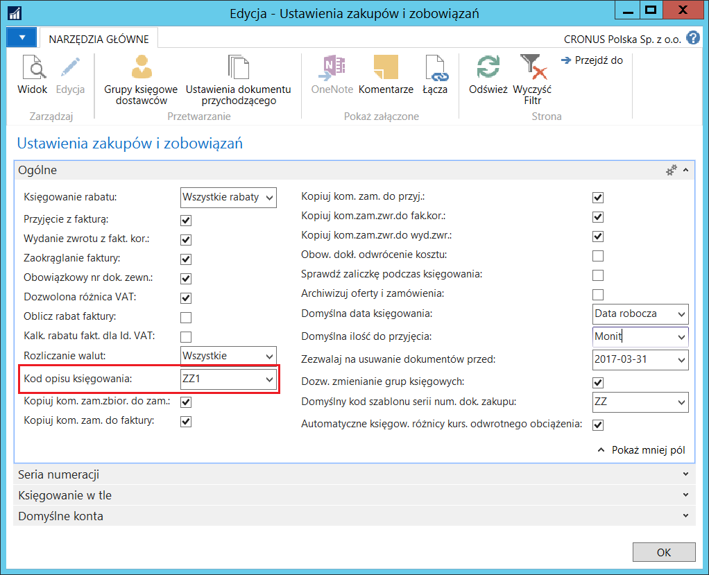
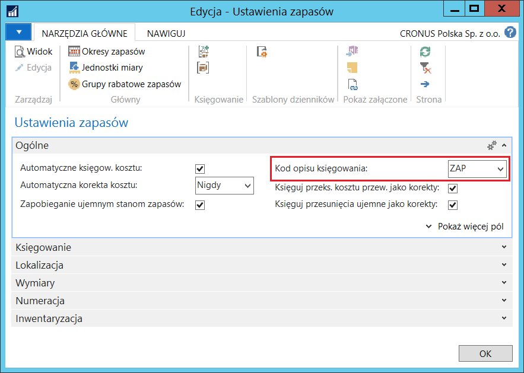
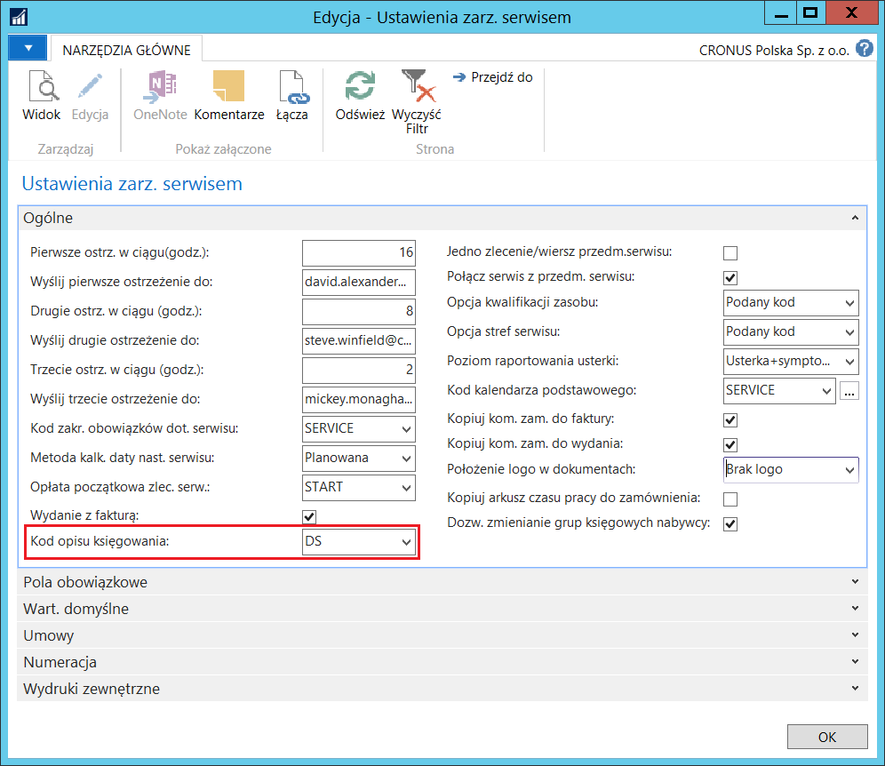
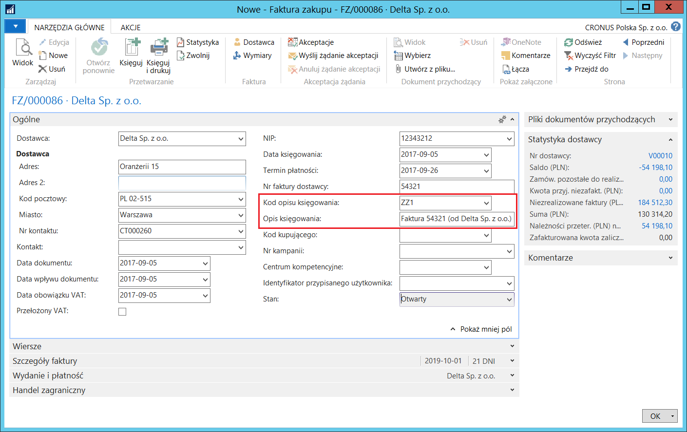
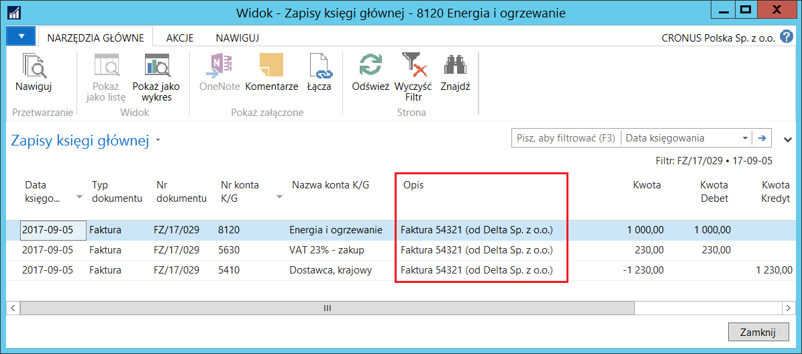

Opis księgowania
Informacje ogólne
Jest to element Polskiej Lokalizacji systemu Microsoft Dynamics 365 Business Central on‑premises wprowadzający ułatwienia w opisywaniu księgowanych transakcji zapisywanych w tabeli Zapis księgi głównej. Pozwala też na ujednolicenie systemu opisywania transakcji poprzez zablokowanie dokonywania zmian w wybranych opisach wstawianych domyślnie.
Ustawienia
Możliwe jest zdefiniowanie różnych sposobów tworzenia opisów transakcji zapisywanych w tabeli Zapis księgi głównej, które będą generowane przez system w różnych typach dokumentów. W tym celu należy postępować według następujących kroków:
Należy wybrać Działy > Zarządzanie Finansami > Administracja > Opisy księgowania.
W oknie Opisy księgowania, które się otworzy, należy w pustym wierszu wypełnić kolejno pola:
Kod – w tym polu należy wprowadzić unikalny kod dla opisu księgowania
Opis – w tym polu należy wprowadzić krótki opis dla opisu księgowania
Typ – w tym polu należy wybrać spośród dostępnych opcji, gdzie opis księgowania będzie używany. Dostępne opcje:
Dokument sprzedaży
Dokument zakupu
Księgowanie kosztu zapasów
Nota odsetkowa
Dokument serwisowy
Formuła opisu księgowania – to pole przedstawia, w jaki sposób będą generowane elementy opisu sięgowania. Tutaj można wprowadzić znaki specjalne, jak np. %1 lub %2, w miejsce tórych system wstawi wartości z księgowanego dokumentu. Parametry dla znaków specjalnych definiowane są w odrębnym oknie, co zostanie opisane w dalszej części tego rozdziału.
Sprawdź przy księgowaniu – jeśli pole jest zaznaczone, system podczas księgowania umieści w zapisach domyślną treść opisu. Jakiekolwiek zmiany w opisie wprowadzone przez użytkownika, zostaną zignorowane. W przypadku, gdy pole nie jest zaznaczone, opis, który zostanie przeniesiony do zapisów księgi głównej podczas księgowania, będzie uwzględniał wszystkie zmiany wprowadzone przez użytkownika.

W następnym kroku, dla każdego wiersza, w którym, w polu Formuła opisu księgowania umieszczone zostały znaki specjalne %1 %2 %3 ... , konieczne jest zdefiniowanie parametrów, według których system będzie podstawiał odpowiednie wartości w miejsce znaków specjalnych. W tym celu, dla każdego opisu oddzielnie, należy wybrać Parametry.
W oknie Parametry opisu księgowania, które się otworzy, należy odpowiednio wypełnić pola:
Nr – w tym polu należy wprowadzić cyfrę odpowiadającą znakowi specjalnemu zawartemu w polu Formuła opisu księgowania. Parametr wprowadzony w wierszu z tym numerem zostanie wstawiony w odpowiednie miejsce opisu księgowania, np. parametr w wierszu z numerem 1 zostanie wstawiony w miejsce znaku specjalnego %1.
Uwaga
Z uwagi na ograniczenia techniczne, numery w oknie Parametry opisu księgowania zawsze muszą zaczynać się od 1 i nie może być ich więcej niż 10 dla każdego opisu księgowania. Dodatkowo, pole Opis w oknie Zapis księgi głównej nie może zawierać więcej niż 50 znaków.
Typ – w tym polu należy wybrać, jakiego typu parametr będzie użyty. Dostępne opcje to:
Etykieta – wybranie tej opcji oznacza, że w miejsce odpowiedniego znaku specjalnego zostanie podstawiona nazwa pola wybranego w polu Nazwa pola
Wartość – wybranie tej opcji oznacza, że w miejsce odpowiedniego znaku specjalnego zostanie podstawiona zawartość pola wybranego w polu Nazwa pola
Stała – wybranie tej opcji oznacza, że w miejsce odpowiedniego znaku specjalnego zostanie podstawiona treść ręcznie wpisana w polu Nazwa pola.
Uwaga
Należy pamiętać, że zawartość niektórych rodzajów pól (np. typu Opcja) oraz nazwy pól będą tłumaczone na język aplikacji. Jeśli wymagane jest, aby parametry ulegające tłumaczeniom w opisach były wyświetlane zawsze w jednym, wybranym, języku, należy użyć opcji Stała i ręcznie wpisać treść.
Nazwa pola – w tym polu należy wybrać pola, których nazwa lub zawartość (dla typów: Etykieta lub Wartość) będą użyte w miejscu znaków specjalnych w polu Formuła Opisu Księgowania albo wprowadzić stałą treść (dla typu Stała) w tym samym celu. W zależności od wybranego typu w polu Typ w oknie Opisy księgowania, lista pól dostępnych do wyboru w polu Nazwa pola będzie różna:
Dokument sprzedaży – lista rozwijana w polu Nazwa pola będzie zestawieniem pól tabeli Nagłówek sprzedaży.
Dokument zakupu – lista rozwijana w polu Nazwa pola będzie zestawieniem pól tabeli Nagłówek zakupu.
Księgowanie kosztu zapasów – lista rozwijana w polu Nazwa pola będzie zestawieniem pól tabeli Zapisy wyceny.
Nota odsetkowa – lista rozwijana w polu Nazwa pola będzie zestawieniem pól tabeli Nagłówek noty odsetkowej.
Dokument serwisowy – lista rozwijana w polu Nazwa pola będzie zestawieniem pól tabeli Nagłówek serwisu.

Na podstawie przykładowych ustawień zaprezentowanych na powyższym rysunku, dla faktury zakupu z numerem 13/078 od firmy o nazwie Delta Sp. z o. o. system wygeneruje opis księgowania: Faktura 2017/548765 (od Delta Sp. z o.o.)
W ramach definiowania ustawień konieczne jest też wybranie opisów domyślnych, które system będzie automatycznie generował w różnych miejscach. W tym celu należy postępować według następujących kroków:
Należy wybrać Działy \ Zarządzanie Finansami \ Administracja
Ustawienia sprzedaży i należności.W oknie Ustawienia sprzedaży i należn., które się otworzy, na karcie skróconej Ogólne, należy uzupełnić pola:
Kod opisu księgowania – z listy rozwijanej należy wybrać właściwy kod spośród wcześniej zdefiniowanych opisów, który będzie domyślnie stosowany w dokumentach sprzedaży: ofercie, zamówieniu, fakturze, zamówieniu zwrotu oraz fakturze korygującej.
Kod opisu księgowania odsetek – z listy rozwijanej należy wybrać właściwy kod spośród wcześniej zdefiniowanych opisów, który będzie domyślnie stosowany w notach odsetkowych.

Uwaga
Należy zwrócić uwagę, że lista rozwijana w polu Kod opisu księgowania składa się wyłącznie z kodów opisów zdefiniowanych z typem Dokument sprzedaży, a w polu Kod opisu księgowania odsetek – z kodów opisów zdefiniowanych z typem Nota odsetkowa.
Należy wybrać Działy > Zarządzanie Finansami > Administracja
Ustawienia zakupów i zobowiązań.W oknie Ustawienia zakupów i zobow., które się otworzy, na karcie skróconej Ogólne, należy uzupełnić pole Kod opisu księgowania – z listy rozwijanej należy wybrać właściwy kod spośród wcześniej zdefiniowanych opisów, który będzie domyślnie stosowany w dokumentach zakupu: ofercie, zamówieniu, fakturze, zamówieniu zwrotu oraz fakturze korygującej.

Uwaga
Należy zwrócić uwagę, że lista rozwijana w polu Kod opisu księgowania składa się wyłącznie z kodów opisów zdefiniowanych z typem Dokument zakupu.
Należy wybrać Działy > Zarządzanie Finansami > Administracja > Ustawienia zapasów.
W oknie Ustawienia zapasów, które się otworzy, na karcie skróconej Ogólne, należy uzupełnić pole Kod opisu księgowania – z listy rozwijanej należy wybrać właściwy kod spośród wcześniej zdefiniowanych opisów, który będzie domyślnie stosowany w skrypcie Księguj koszt zapasów do K/G.

Uwaga
Należy zwrócić uwagę, że lista rozwijana w polu Kod opisu księgowania składa się wyłącznie z kodów opisów zdefiniowanych z typem Księgowanie kosztów zapasu.
Należy wybrać Działy > Serwis > Administracja > Ustawienia serwisu.
W oknie Ustawienia zarz. serwisem, które się otworzy, na karcie skróconej Ogólne, należy uzupełnić pole Kod opisu księgowania – z listy rozwijanej należy wybrać właściwy kod spośród wcześniej zdefiniowanych opisów, który będzie domyślnie stosowany w dokumentach serwisu: zleceniu, fakturze oraz fakturze korygującej.

Uwaga
Należy zwrócić uwagę, że lista rozwijana w polu Kod opisu księgowania składa się wyłącznie z kodów opisów zdefiniowanych z typem Dokument serwisowy.
Obsługa
Po zdefiniowaniu opisów księgowania i ustawieniu reguł ich księgowania, można zacząć korzystać z tej funkcjonalności, np. w fakturze zakupu. W tym celu należy postępować według następujących kroków:
Należy wybrać Nowe w oknie Faktury zakupu i wprowadzić co najmniej dostawcę oraz numer jego faktury.
W kartotece nowej faktury zakupu system uzupełni domyślnie pole Kod opisu księgowania oraz Opis księgowania na podstawie wcześniej zdefiniowanych ustawień i parametrów.

Pozostałe pola faktury zakupu należy uzupełnić standardowo.
Jeśli konieczna jest zmiana treści w polu Opis księgowania, można to zrobić w dwojaki sposób, w zależności od ustawień:
Jeżeli pole Sprawdź przy księgowaniu nie jest zaznaczone dla wybranego Kodu opisu księgowania, wszelkie konieczne zmiany należy wprowadzić w treści opisu wstawionego domyślnie
Jeżeli pole Sprawdź przy księgowaniu jest zaznaczone dla wybranego Kodu opisu księgowania, wszelkie zmiany wprowadzone w treści opisu wstawionego domyślnie zostaną zignorowane w trakcie księgowania. Wprowadzenie nowej treści opisu w zamówieniu zakupu jest możliwe po wyczyszczeniu pola Kod opisu księgowania.
Należy zaksięgować fakturę zakupu, aby sprawdzić opis księgowania utworzony w tabeli Zapis księgi głównej.

Uwaga
Jeżeli w oknach z ustawieniami nie zostanie wskazany domyślny Kod opisu księgowania, system wygeneruje opis zgodnie ze standardem wersji międzynarodowej.